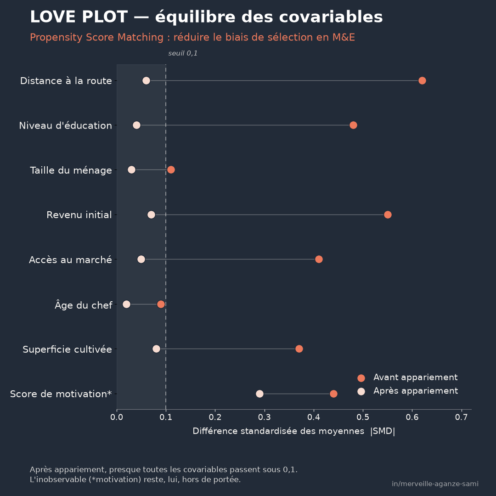

Une pratique fréquente en évaluation consiste à comparer un groupe de bénéficiaires à un groupe de non-bénéficiaires, puis à attribuer l'écart mesuré au programme. Cette lecture suppose que les deux groupes étaient comparables avant l'intervention. Cette condition est rarement vérifiée sur le terrain.
La participation à un projet résulte en effet presque toujours d'un processus de sélection : ciblage par des critères d'éligibilité, auto-sélection des ménages les plus disponibles ou les mieux informés, proximité d'une voie d'accès. L'écart observé en fin de programme agrège alors deux composantes : l'effet de l'intervention et les différences préexistantes entre les deux groupes. Cette confusion constitue le biais de sélection, dont l'ampleur peut dépasser celle de l'effet recherché (Heckman et al., 1997).
1. Le principe du score de propension
Le score de propension se définit comme la probabilité, pour une unité donnée, de recevoir le traitement compte tenu de ses caractéristiques observées avant l'intervention. Il est le plus souvent estimé par une régression logistique dont la variable dépendante est la participation, et les variables explicatives les caractéristiques de départ : taille du ménage, niveau d'instruction, actifs productifs, distance au centre, situation initiale de l'indicateur d'intérêt.
La propriété fondatrice. Le score de propension est un score d'équilibrage : conditionnellement à sa valeur, la distribution des covariables observées est indépendante de l'affectation au traitement. Comparer des unités de score voisin revient donc, sur ces variables, à comparer des profils équivalents — un résultat qui ramène un problème multidimensionnel à un problème unidimensionnel (Rosenbaum & Rubin, 1983).
Cette propriété n'est valable que sous une hypothèse explicite, dite d'indépendance conditionnelle : l'ensemble des variables qui influencent conjointement la participation et le résultat doit figurer dans le modèle. C'est une hypothèse d'identification, non un résultat que les données peuvent démontrer.
2. Les cinq étapes de la mise en œuvre
- 1Spécifier les covariables. Ne retenir que des variables mesurées avant l'intervention ou structurellement invariantes. Inclure une variable postérieure au traitement, elle-même affectée par celui-ci, introduit un biais supplémentaire.
- 2Estimer le score. Une régression logistique suffit dans la plupart des cas. L'objectif n'est pas de maximiser la qualité de prédiction du modèle, mais d'obtenir un score qui équilibre les groupes.
- 3Choisir l'algorithme d'appariement. Plus proche voisin avec ou sans remise, appariement par noyau, stratification, ou pondération par l'inverse de la probabilité. Chaque option arbitre entre biais et variance ; les propriétés respectives sont documentées (Caliendo & Kopeinig, 2008).
- 4Imposer un support commun et un caliper. Les unités traitées dont le score n'a aucun équivalent dans le groupe témoin doivent être écartées ou signalées. Une distance maximale de score — le caliper — évite les appariements de complaisance entre profils éloignés.
- 5Contrôler l'équilibre. Étape non facultative : c'est elle, et non l'estimation, qui valide l'appariement.
3. Diagnostiquer l'équilibre plutôt que l'ajustement
La qualité d'un appariement ne se juge pas à la significativité des coefficients du modèle de participation, mais à la réduction effective des écarts entre groupes. L'indicateur usuel est la différence standardisée des moyennes, calculée covariable par covariable avant et après appariement.
La littérature méthodologique retient conventionnellement une valeur absolue inférieure à 0,1 comme indice d'équilibre acceptable ; il s'agit d'un repère pragmatique et non d'un seuil statistique (Austin, 2011). La représentation graphique de ces différences avant et après appariement — souvent appelée love plot — permet de visualiser en une figure si l'opération a effectivement resserré les distributions. Il est également recommandé d'examiner le recouvrement des distributions de scores et, pour les variables continues, les écarts de variance (Stuart, 2010).
4. Limites à documenter
- L'inobservable reste hors d'atteinte. Motivation, capital social, information préalable ne figurent pas dans les données d'enquête courantes. L'appariement les laisse intacts. Un test de sensibilité, indiquant l'intensité qu'aurait dû atteindre un facteur non observé pour annuler le résultat, permet au moins d'en quantifier l'enjeu.
- L'appariement sur le score n'est pas toujours le meilleur choix. Des travaux ont montré que l'appariement fondé sur le seul score de propension peut, dans certaines configurations, dégrader l'équilibre par rapport à des méthodes d'appariement direct sur les covariables. Cette critique porte sur l'usage du score pour apparier, non sur la famille des méthodes de score de propension dans son ensemble (King & Nielsen, 2019).
- Les erreurs-types doivent tenir compte de l'appariement. Traiter l'échantillon apparié comme un échantillon ordinaire sous-estime l'incertitude, le score étant lui-même estimé. Le rééchantillonnage ou des estimateurs de variance adaptés sont nécessaires.
- La restriction au support commun modifie la population d'inférence. Si une part importante des unités traitées est écartée faute d'équivalent, l'effet estimé ne porte plus sur l'ensemble des bénéficiaires. Le taux d'appariement doit être reporté.
5. Positionnement dans un dispositif d'évaluation
L'appariement par score de propension ne remplace pas l'assignation aléatoire ; il fournit une approximation dans les situations, majoritaires en coopération, où la randomisation n'est ni réalisable ni acceptable. Sa crédibilité tient à la richesse des données de départ : une enquête de référence bien conçue, couvrant les déterminants plausibles de la participation, en conditionne davantage la validité que le raffinement de l'algorithme retenu.
Lorsque des données sont disponibles avant et après l'intervention pour les deux groupes, la combinaison de l'appariement et de la double différence renforce nettement l'argument : elle neutralise les différences constantes dans le temps, y compris inobservées, qui subsistent après appariement.
Points essentiels
- Le score de propension résume en une dimension les caractéristiques observées qui déterminent la participation
- Sa validité repose sur une hypothèse d'identification que les données ne peuvent pas vérifier
- Le contrôle d'équilibre — différences standardisées, seuil indicatif de 0,1 — valide l'appariement, pas la qualité du modèle
- L'inobservable n'est pas corrigé : documenter la sensibilité et le taux d'appariement
- Une enquête de référence complète pèse davantage que le choix de l'algorithme
La question utile en amont d'une évaluation n'est pas de savoir quel écart sépare les deux groupes, mais dans quelle mesure ces groupes étaient comparables avant l'intervention. La réponse à cette question détermine ce que l'écart mesuré autorise à conclure.
Références
- Austin, P. C. (2011). An Introduction to Propensity Score Methods for Reducing the Effects of Confounding in Observational Studies. Multivariate Behavioral Research, 46(3), 399–424. doi.org/10.1080/00273171.2011.568786
- Caliendo, M., & Kopeinig, S. (2008). Some Practical Guidance for the Implementation of Propensity Score Matching. Journal of Economic Surveys, 22(1), 31–72. doi.org/10.1111/j.1467-6419.2007.00527.x
- Heckman, J. J., Ichimura, H., & Todd, P. E. (1997). Matching as an Econometric Evaluation Estimator: Evidence from Evaluating a Job Training Programme. The Review of Economic Studies, 64(4), 605–654. doi.org/10.2307/2971733
- King, G., & Nielsen, R. (2019). Why Propensity Scores Should Not Be Used for Matching. Political Analysis, 27(4), 435–454. doi.org/10.1017/pan.2019.11
- Rosenbaum, P. R., & Rubin, D. B. (1983). The Central Role of the Propensity Score in Observational Studies for Causal Effects. Biometrika, 70(1), 41–55. doi.org/10.1093/biomet/70.1.41
- Stuart, E. A. (2010). Matching Methods for Causal Inference: A Review and a Look Forward. Statistical Science, 25(1), 1–21. doi.org/10.1214/09-STS313

Merveille Aganze Sami
Conseillère MEL & Gestion de Bases de Données. Plus de 9 ans d'expérience en suivi-évaluation, SIG et digitalisation auprès d'organisations internationales (GIZ, Enabel) en RD Congo.
Une évaluation d'impact à concevoir ?
Prendre contact